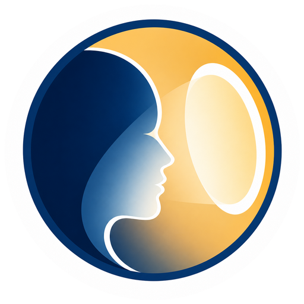
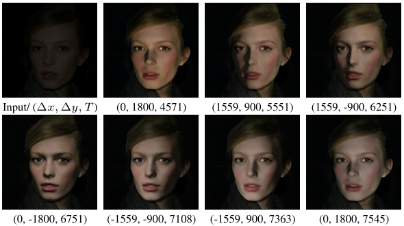
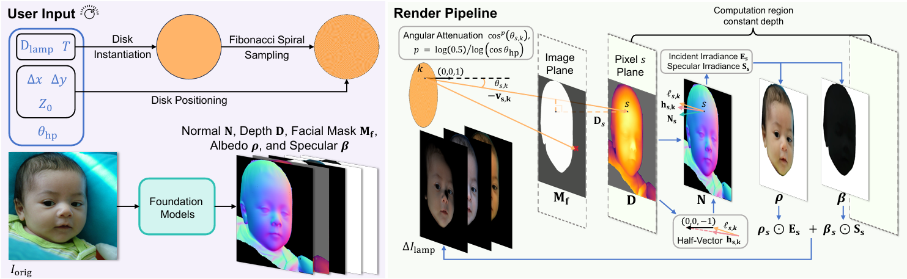
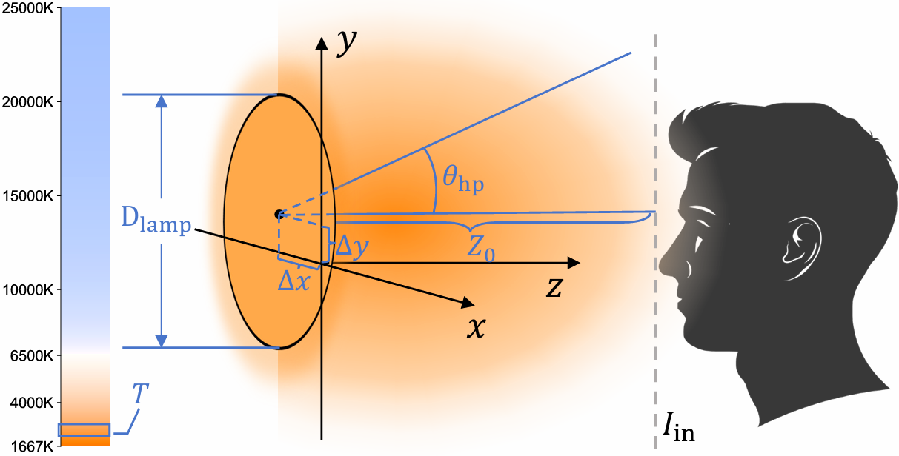
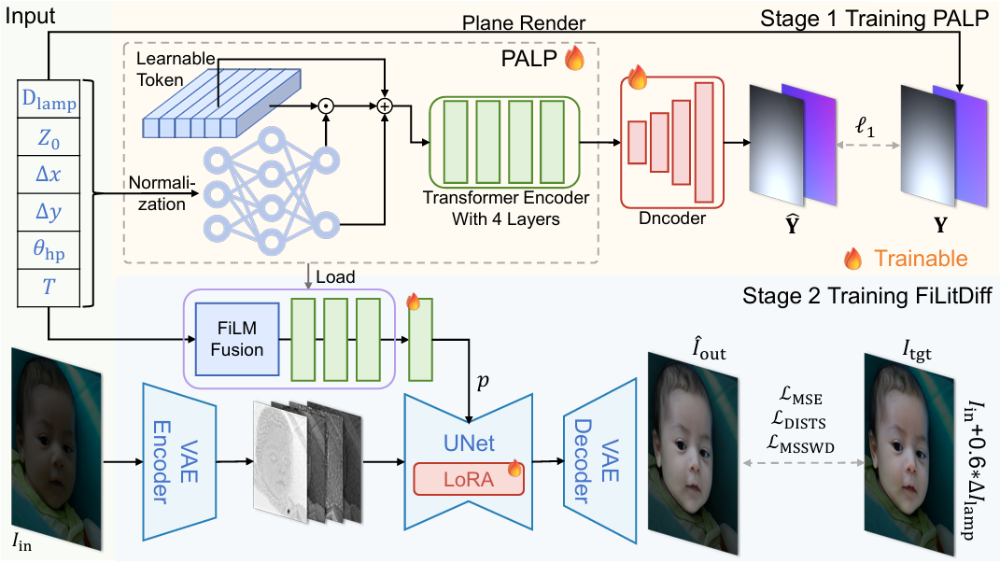
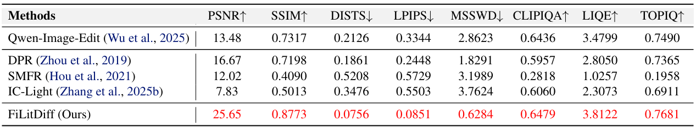
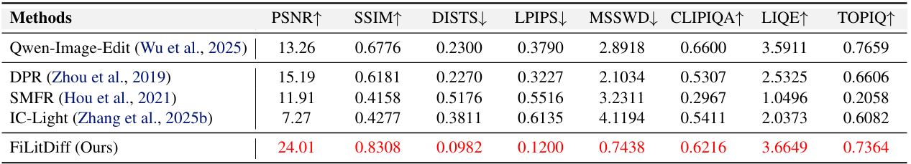
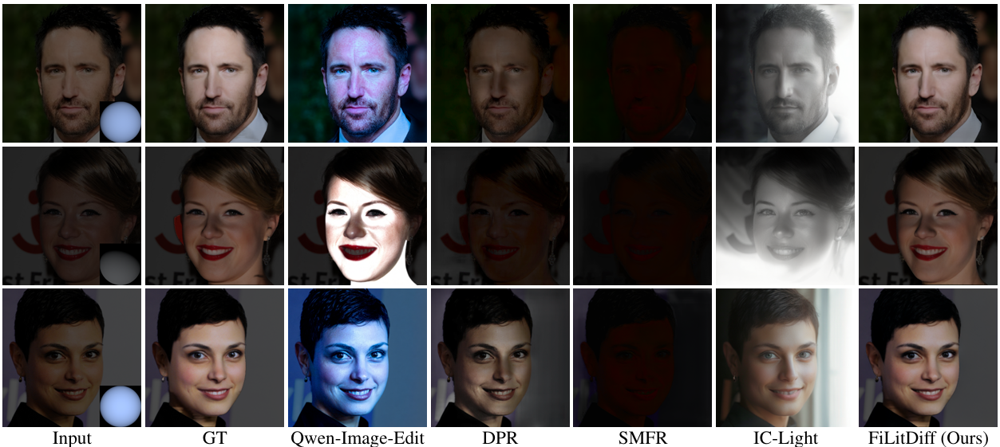
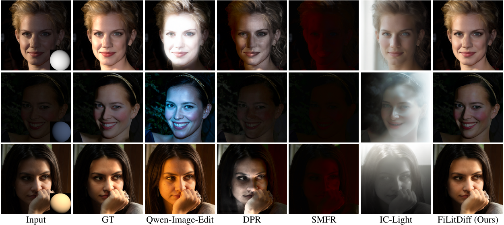

Light Up Your FaceA physically grounded one-step diffusion method for controllable face fill-light enhancement, trained on a 160K-pair dataset with 6D area-disk lighting control and physics-aware conditioning.

Face fill-light enhancement (FFE) brightens underexposed faces by adding virtual fill light while keeping the original scene illumination and background unchanged. Most face relighting methods aim to reshape overall lighting, which can suppress the input illumination or modify the entire scene, leading to foreground-background inconsistency and mismatching practical FFE needs.
To support scalable learning, we introduce LightYourFace-160K (LYF-160K), a large-scale paired dataset built with a physically consistent renderer that injects a disk-shaped area fill light controlled by six disentangled factors, producing 160K before-and-after pairs.
We first pretrain a physics-aware lighting prompt (PALP) that embeds the 6D parameters into conditioning tokens, using an auxiliary planar-light reconstruction objective. Building on a pretrained diffusion backbone, we then train FiLitDiff, an efficient one-step diffusion model conditioned on physically grounded lighting codes, enabling controllable and high-fidelity fill lighting at low computational cost.
We build paired supervision with a physically consistent fill-light renderer and learn a diffusion model whose conditioning follows the same lighting parameterization. The renderer provides controllable disk-shaped area-light supervision, while PALP and FiLitDiff translate the physical controls into one-step face fill-light enhancement.



FiLitDiff achieves strong full-reference metrics and perceptual quality on LYF-Val and LYF-EditVal while preserving the original scene and background illumination. Detailed quantitative and visual comparisons are available in the paper.




@inproceedings{gong2026lightface,
title={{Light Up Your Face: A Physically Consistent Dataset and Diffusion Model for Face Fill-Light Enhancement}},
author={Gong, Jue and Zhou, Zihan and Wang, Jingkai and Liu, Xiaohong and Zhang, Yulun and Yang, Xiaokang},
booktitle={International Conference on Machine Learning (ICML)},
year={2026}
}